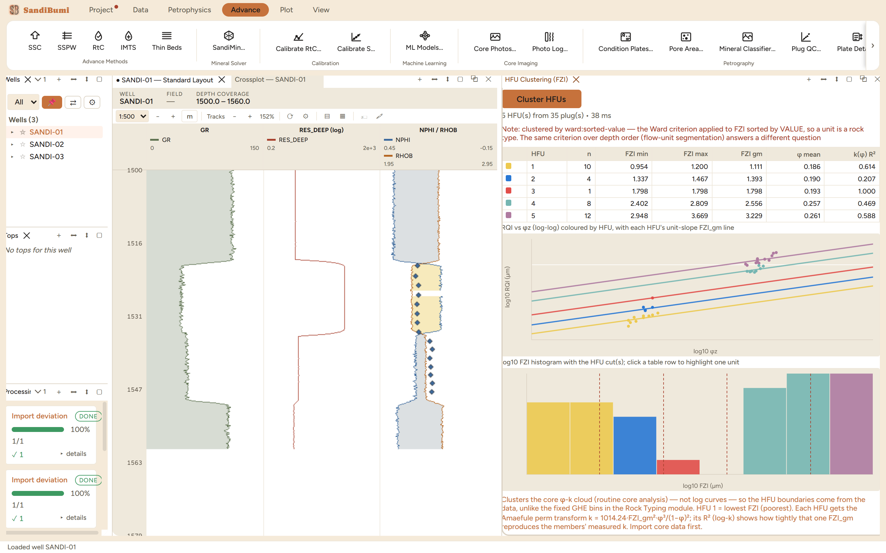

The HFU pane clusters the core porosity-permeability cloud into
hydraulic flow units by Flow Zone Indicator, so the unit boundaries come
from the data itself rather than from fixed global bins. Reach for it when
a cored field needs its own rock types: each unit gets a geometric-mean FZI
and the Amaefule permeability transform it implies, which is the k(φ)
law to carry to the uncored wells.
The pane

Five units from 35 plugs by Ward clustering on FZI: the
RQI–φz plot with one unit-slope line per unit, and the
log-FZI histogram with the cluster cuts dashed.
It clusters core, not logs, and says so; the fixed GHE bins
live in the Rock Typing module for the log-domain job.
Two methods: Ward minimum-variance on sorted FZI, or
histogram antimodes. The result note names which ran and draws the
distinction that matters:
Note: clustered by ward:sorted-value — the Ward criterion applied to FZI sorted
by VALUE, so a unit is a rock type. The same criterion over depth order
(flow-unit segmentation) answers a different question
Each unit's k(φ) R² reports how tightly one FZI_gm
reproduces its members' measured permeability, which is the number
that decides whether the unit is usable as a transform.
Step by step
Import core data, open the pane (workspace ＋ menu ▸
HFU Clustering), choose K and the method, and press
Cluster HFUs.
Read the table with the two plots: units should be parallel bands on
the RQI–φz plot, and the histogram cuts should fall in real
antimodes, not in the middle of a mode.
Click a row to highlight one unit across both plots.
Reading the result
The example clusters 35 of the 45 plugs (a plug missing either
measurement cannot carry an FZI and is left out, never imputed) into five
units spanning FZI 0.95–3.67 µm. The accounting worth
reading is per unit: unit 3 holds a single plug, so its perfect
R² of 1.000 is a tautology, and units 2's 0.207 says four plugs of
similar FZI still scatter in permeability. K is a choice, not a
measurement; five units on 35 plugs is already thin, and the per-unit n
column is the guard against slicing thinner than the data supports.
QC and pitfalls
A unit needs enough plugs to mean anything. Treat any
single-digit n with suspicion, and a single-plug unit as an outlier
wearing a label.
Rock type versus flow segment. Sorted-value clustering groups
similar rock wherever it sits in the column; if the question is
"which intervals flow together", that is depth-order segmentation,
a different computation the note points to.
Carry the transform, not the cluster. What travels to uncored
wells is each unit's FZI_gm and its k(φ) law plus a way to assign
units from logs; the cluster assignment itself exists only where core
exists.